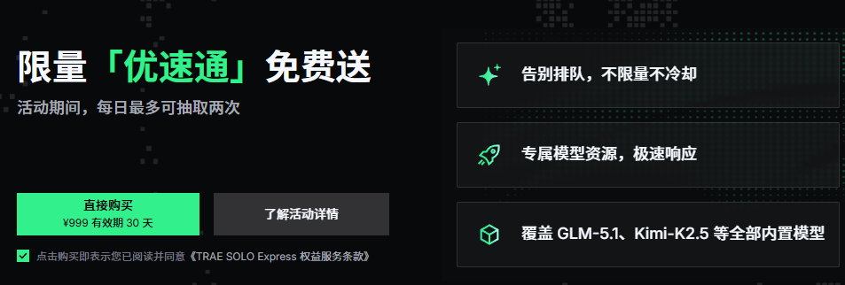

一
还是先说关注的AI情报
codebuddy国内版增加了deepseek-V4 flash，trae增加了deepseek-V4 pro。我都试过了，codebuddy的ds很快响应，trae的排队4800多人，是4800多人（很怀念那时没人用的时候）！然后提示我购买优速通。好家伙，1000块有效期30天? 我有理解错吗？！那对比起来，codebuddy138一个月还是划算的。而且我用了好几天deepseek的API，也才几块钱。

早上，我看见qoder又放出了新的招数留住用户——全面开放BYOK，BYOK就是可以用自己的API来工作，我又马上尝试，可以接入ds,kimi,智普，minmax，不过没有小米？！为什么没有小米mimo呢？！
根据最新的情况，我使用工具的编排就是codebuddy>qoder>opencode>claude code，可能会很奇怪最强的claude code放在最后？！嗯，这是在实操中靠感觉自然得出的结论，不过顺序排列是很动态的。
deepseek增加了看图功能，不过暂时这不是我关注的新功能。
二
回到题目
昨天有朋友在评论区问，怎么在龙虾中帮助基本面分析，还有朋友问龙虾和爱马仕怎么做短线研究。我觉得龙虾做短线研究是不合适，不过我的实践是基于腾讯云部署的龙虾以及使用的minmax和qwen3.6plus，功能大大阉割了，如果本地部署和用上现在的deepseek或者小米mimoV2.5模型，可能大不同，所以谨慎参考。
短线研究相对来说复杂一点，涉及数据的处理。除了看自己的逻辑有没有问题，还要看AI理解自己的逻辑有没有问题，再到生成的代码有没有问题。尤其需要回测的，通常需要反复地确认有没有错误的地方。
如果用龙虾，之前也没有用AI编程弄过回测，没有处理过ai报错的内容，很容易就相信了龙虾最后给出的答案，龙虾中途处理过什么问题并不知道，而多数人又不会确认一下是否符合自己的逻辑。其实答案有好多问题，误信了就麻烦。
但这个问题在基本面研究好像就没有那么大，基本面研究最主要在数据的获取和通过理念分析上，数据处理逻辑较为简单，数据量也少很多。所以真正起作用的是分析的逻辑和理念，把相关文件喂给龙虾。
我之前的尝试是，先把整个大逻辑用AI梳理一遍，包括宏观经济到公司分析。首先宏观分析，我采用的是奥地利学派的底层逻辑，然后把“土地私有制”的更底层逻辑变换成更符合我们实情的（我自己认为），然后搭配控制论的思想，形成一个文档。告诉龙虾，分析的时候需要遵守这个分析的理念。
我的理念主要是分析“自然利率”的变化导致的社会资金流动，“自然利率”是奥地利学派的概念，不是银行利率或者国债利率，需要在整体经济运行中直接感觉或者反推，再加上科技的发展引发的社会断层式变革，通过这样来进行投资机会分析。
添加同花顺的skill（https://www.iwencai.com/unifiedwap/skillhub）、东方财富skill（手机APP搜skill）、tushare（需要充值）还有网页搜索功能，利用全部获取到的数据来分析公司未来的可能增长，以及分谨慎乐观和积极三个档次来估值，同时比较财务报表数据估值，还有市值。
我在上个月底实践的这套分析，纯龙虾，按照当时的条件，得出两个股票，其中一个是寒武纪（已涨勿追），另外一个就不说了。最近我在运行的时候，股票池增加到了20个。
由于云龙虾不稳定和我的精力有限，龙虾基本面分析这个事情就放一边，但这个项目确实很有继续改善的空间和价值。等我在机器学习和深度学习这边折腾得差不多，我再回头在本地部署的龙虾上做这件事。
三
总结一些建议
龙虾处理后的数据需要反复验证，因为错误可能是多层次的；数据来源需要再确认，数据有可能是来自“小作文”；基础理论和理念投喂要清晰，配备进化机制；
暂时这些，期待朋友评论区补充……